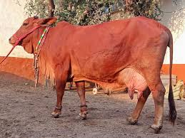
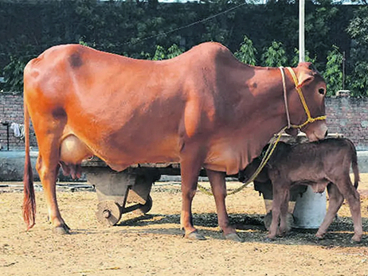
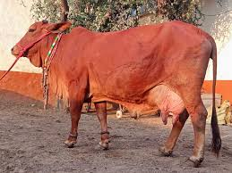
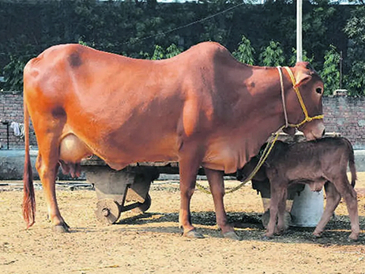

👨‍🌾 My Journey
Hello! I'm Syed Faheem, a computer science student and young dairy entrepreneur. I started my dairy business alongside my studies with just 2 cows and a dream. My goal? To provide clean, healthy milk to our community while building a modern, tech-powered farm.

💡 The DairyTrack Startup
From managing cattle and milk records to tracking income — I built this project with both tech and heart. I believe in bringing transparency and quality into traditional dairy farming using modern tools.
👨‍🎓 Meet Me - Syed Faheem
🮠My First Dairy Partners
 



📋 Cow Profiles
🔢 Enter Daily Milk Output
🧮 Daily Milk Production & Income
Total Milk: -- liters
Estimated Income (PKR 150/liter): -- PKR
📅 Monthly Production & Estimated Income
Monthly Milk: -- liters
Monthly Income: -- PKR